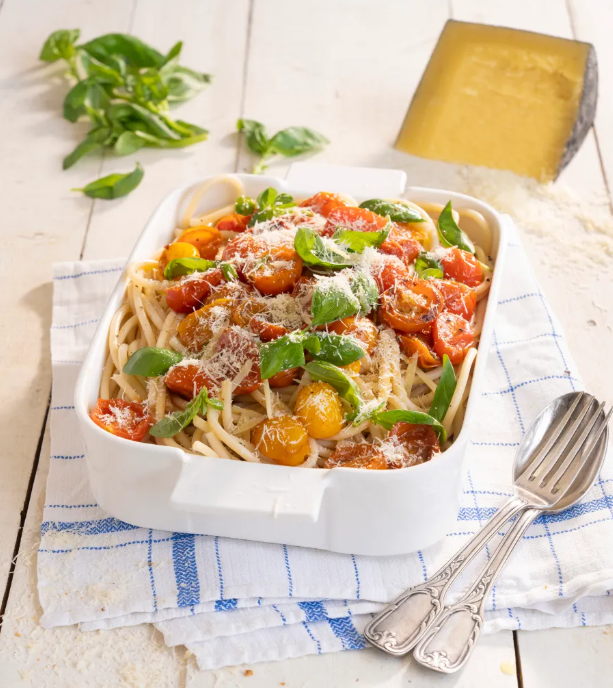

RECETA 3: Fideos con tomates cherry y albahaca

Ingredientes
- 3 dientes de ajo.
- 1/2 cebolla.
- 250 g de tomates cherry.
- 12 hojas de albahaca.
- 500 g de pasta.
- Aceite de oliva.
- Sal.
- Queso reggianito Cremigal
Preparación:
- Pelamos y picamos los dientes de ajo y la ½ cebolla. Lavamos y cortamos por la mitad los tomates cherry..
- En una sartén, con un chorrito de aceite, agregamos el ajo, la cebolla y una pizca de sal y mantenemos en el fuego durante 6-8 minutos. Añadimos a lo anterior los tomates y salteamos durante 2 minutos.
- Lavamos las hojas de albahaca, para añadir a la sartén y mezclamos. Retiramos la misma del fuego y reservamos.
- Ponemos a hervir abundante agua con un poco de sal. Añadimos la pasta, cocinamos a gusto o acorde a las instrucciones del paquete y escurrimos.
- Echamos la pasta a la sartén con los demás ingredientes ya salteados agregando un poquito de aceite y mezclamos bien. Servimos con una lluvia de queso reggianito y ¡listo!